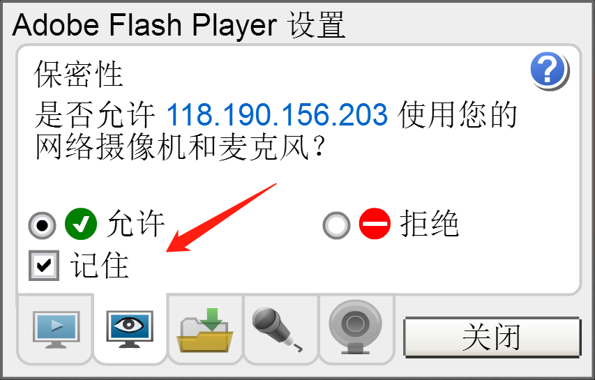

- [注意] 打开本页面后,系统会有弹出提示“Adobe Flash Player 设置”（如下图），请点击“允许”和“记住”，这一步很重要，如操作不当，系统不会存储录音。
- 
- 第一步：耳机检测 请点击红色“播放示范”按钮，检查耳机音量。如需调整，请调节左侧滑动条
- 第二步：麦克风检测 请点击开始录音按钮，并朗读红色文字： 欢迎参加。 录音结束后，请点击绿色“播放我的录音”按钮，如果听到自己所说的红色文字比较清，那么麦克风检测正常，请点击下一步按钮。请尽量使用匀速、中等音量朗读，切勿声音过大或过小。